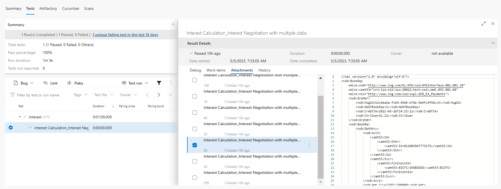
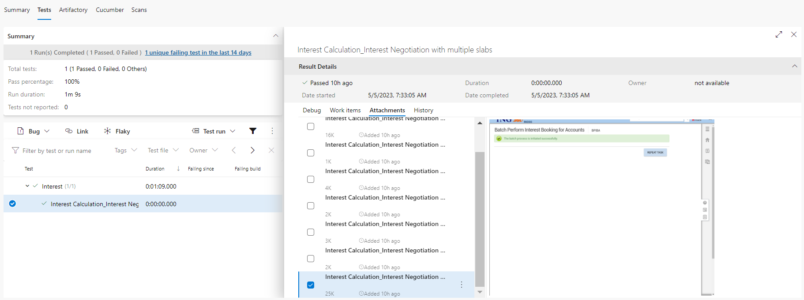

Continuous Integration
Azure DevOps Integration
Integration with Azure DevOps involves the following points :
- Check-in the tests into Azure Repository. Here we need to understand which are the files that need to go into Azure Repo.
- Execution of tests via Azure DevOps Pipeline.
- Viewing of Test Results (Pass, Fail, Logs, Screenshots etc.) in Azure DevOps itself
- Analysis of Historical Results via Azure Analytics
- Feed test results automatically to Azure DevOps Test Plans [Optional]

Azure DevOps Repository
Libraries pulled from Azure feeds.
Please follow this link to know how to create a feed.
A basic incoming feed json for IRG can be found here
The following is the content of a .gitignore file. The lib/*.jar is important here. These jars should be pulled from your Maven feed instead of pushing them to Repositories.
Extensions/
logs/
Projects/*/Results/*/
Projects/*/*/Results/*/
web/
recent.items
log.txt
Tools/
lib/*.jar
Every file other than the above should go into your repository.
Azure DevOps Pipeline
Libraries pulled in from Azure feeds.
The yaml file content should be as shown below.
pool:
name: 'CDaaSLinux'
stages :
- stage: TestExecution
jobs :
- job : TestExecution
steps:
- checkout: self
fetchDepth: 1
clean: true
# This is to set Java 11
- script: |
echo "##vso[task.setvariable variable=JAVA_HOME]$(JAVA_HOME_11_X64)"
echo "##vso[task.setvariable variable=PATH]$(JAVA_HOME_11_X64)/bin:$(PATH)"
displayName: "Set java version to 11"
# This is to set Permissions
- task: CmdLine@2
inputs:
script: 'chmod -R 755 ./'
displayName: 'Set Permissions'
# Maven Authentication
- task: MavenAuthenticate@0
inputs:
artifactsFeeds: 'PXXXXX-incoming-maven' # This is the name of your incoming Maven feed
# Maven Initialize
- task: Maven@4
inputs:
mavenPomFile: '$(System.DefaultWorkingDirectory)/Engine/pom.xml'
goals: 'initialize'
options: '-s $(System.DefaultWorkingDirectory)/settings.xml -gs $(HOME)/.m2/settings.xml -Dmaven.wagon.http.ssl.insecure=true' #settings.xml content is given below
publishJUnitResults: false
javaHomeOption: 'JDKVersion'
jdkVersionOption: '1.11'
mavenVersionOption: 'Default'
mavenOptions: '-Xmx3072m -Dmaven.test.failure.ignore=true'
mavenAuthenticateFeed: false
effectivePomSkip: false
sonarQubeRunAnalysis: false
displayName: 'Maven Initialize'
# Maven Install
- task: Maven@4
inputs:
mavenPomFile: '$(System.DefaultWorkingDirectory)/Engine/pom.xml'
goals: 'install'
options: '-s $(System.DefaultWorkingDirectory)/settings.xml -gs $(HOME)/.m2/settings.xml -Dmaven.wagon.http.ssl.insecure=true' #settings.xml content is given below
publishJUnitResults: false
javaHomeOption: 'JDKVersion'
jdkVersionOption: '1.11'
mavenVersionOption: 'Default'
mavenOptions: '-Xmx3072m -Dmaven.test.failure.ignore=true'
mavenAuthenticateFeed: false
effectivePomSkip: false
sonarQubeRunAnalysis: false
displayName: 'Install Libraries'
# Use this task only if you are running INGenious Playwright Studio Tests. For non-playwright tests, this is not required.
- task: CmdLine@2
displayName: 'Install playwright system dependencies'
inputs:
script: |
nohup dnf install libdrm mesa-libgbm libxshmfence -y &
continueOnError: true
# This is to trigger execution
- task: CmdLine@2
inputs:
script: './Run.command -run -project_location "Projects/<your_project_name>" -release "<your_release_name>" -testset "<your_testset_name>" -setEnv "run.AzureReport=true"'
workingDirectory: '$(System.DefaultWorkingDirectory)'
displayName: 'Execute Tests'
# This is to publish test results
- task: PublishTestResults@2
inputs:
testResultsFormat: 'NUnit'
testResultsFiles: 'Projects/<your_project_name>/Results/TestExecution/<your_release_name>/<your_testset_name>/Latest/azure.xml'
testRunTitle: 'Test Results'
Please also make sure the following are also taken care of :
- There is a
settings.xmlin the root location of your repository which has the following content . Make sure you add you incoming Maven feed
<settings xmlns="http://maven.apache.org/SETTINGS/1.0.0"xmlns:xsi="http://www.w3.org/2001/XMLSchema-instance" xsi:schemaLocation="http://maven.apache.org/SETTINGS/1.0.0 https://maven.apache.org/xsd/settings-1.0.0.xsd">
<mirrors>
<mirror>
<id>PXXXXX-incoming-maven</id>
<url>https://pkgs.dev.azure.com/INGCDaaS/IngOne/_packaging/PXXXXX-incoming-maven/maven/v1</url>
<mirrorOf>external:*,!central,!confluent</mirrorOf>
</mirror>
</mirrors>
<proxies>
<proxy>
<active>true</active>
<protocol>http</protocol>
<host>giba-proxy.wps.ing.net</host>
<port>8090</port>
<nonProxyHosts>*.ing.net|*.intranet</nonProxyHosts>
</proxy>
</proxies>
</settings>
Engine\pom.xml ensure that the following section is present :
<distributionManagement>
<repository>
<id>PXXXXX-incoming-maven</id>
<url>https://pkgs.dev.azure.com/INGCDaaS/IngOne/_packaging/PXXXXX-incoming-maven/maven/v1</url>
</repository>
</distributionManagement>
<repositories>
<repository>
<id>PXXXXX-incoming-maven</id>
<url>https://pkgs.dev.azure.com/INGCDaaS/IngOne/_packaging/PXXXXX-incoming-maven/maven/v1</url>
<releases>
<enabled>true</enabled>
</releases>
<snapshots>
<enabled>true</enabled>
</snapshots>
</repository>
</repositories>
<pluginRepositories>
<pluginRepository>
<id>PXXXXX-incoming-maven</id>
<url>https://pkgs.dev.azure.com/INGCDaaS/IngOne/_packaging/PXXXXX-incoming-maven/maven/v1</url>
<releases>
<enabled>true</enabled>
</releases>
<snapshots>
<enabled>true</enabled>
</snapshots>
</pluginRepository>
</pluginRepositories>
Test Results
To view the Test Results we need to navigate to the Tests tab of the Azure DevOps Pipeline.

If we click on the Tests we will see the detailed steps of execution under Debug Window.

If we have API Tests we will see the request/response payloads in the Attachment Window.

If we have Browser Tests we will see the screenshots in the Attachment Window.

Pipeline Analytics
If we click on the Pipeline Name and navigate to the Analytics tab of the Azure DevOps Pipeline, we will see the report like this :

We can use this feature to determine the health of the pipeline and analysis of historical test reports.
Remote Execution Integrations
| Lambda Test | BrowserStack | SauceLabs | Selenium Grid |
|---|---|---|---|
 |
 |
 |
 |